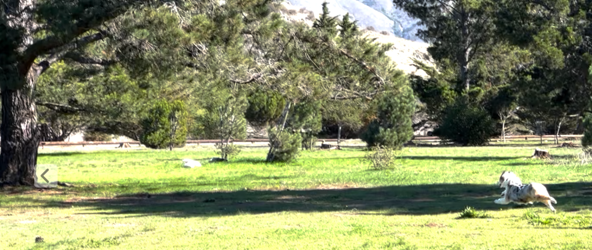

We end up driving down 101 frequently, and after a few hours it is nice to have a place that Cora can run around. This park is one of Cora’s favorite places. There is a park and a frisbee golf course so there is a large area to run around. It’s close to the freeway so it is easy to get to and it is close to downtown SLO if it is time to eat.